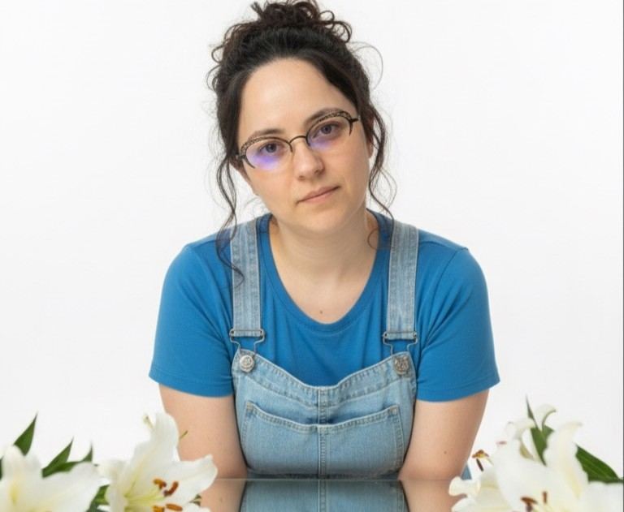
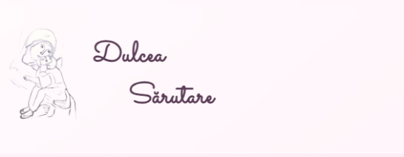
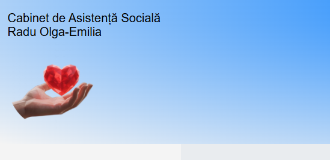

Din pasiune pentru frumos, prin muncă și dedicare
Sunt un dezvoltator web autodidact care a descoperit în cod mai mult decât simple instrucțiuni: am descoperit o metodă de a construi soluții pentru oameni.
Drumul meu în Web Development a început din curiozitate, prin intermediul unui maraton gratuit pus la dispoziție de către compania internațională GoIT și a continuat prin multe ore de exercițiu, încercări și reușite personale. Așa am descoperit cât de mult îmi place să lucrez în cod. Știu că nu am diplome formale în domeniu, dar am ceva mult mai valoros: determinarea de a învăța singură și dorința de a duce la bun sfârșit fiecare lucru început.
Acest site este propriul meu laborator de învățare.
Cine sunt eu dincolo de cod?
Sunt o persoană muncitoare, loială și responsabilă. Cred cu tărie că un proiect reușit nu se oprește la ora 17:00, ci se termină atunci când rezultatul este impecabil. Nu fug de responsabilități și nici de provocările tehnice - dimpotrivă, ele sunt cele care mă ajută să cresc.
Proiectele Mele

Platformă Web interactivă Personală
Acesta este primul meu proiect complex, creat din dorința de a explora limitele design-ului web și ale interactivității. Nu este doar un site de prezentare, ci un spațiu digital unde am experimentat tehnici avansate de manipulare a elementelor în pagină.
Puncte tehnice atinse
-
Am dezvoltat o funcționalitate de tip Dark/Light Mode la anumite articole din secțiunea Blog folosind JavaScript, care permite utilizatorului să schimbe aspectul vizual în timp real.
-
Am creat mini-jocuri care demonstrează stăpânirea logicii de programare și a evenimentelor de tip click sau hover.
-
Am implementat o secțiune de povestiri sub formă de carduri interactive (Flip Cards) și o galerie de imagini de tip Cascadă (Masonry Layout), optimizate pentru o experiență vizuală plăcută.
-
Site-ul este testat și optimizat pentru o afișare impecabilă pe dispozitive mobile (iOS, Android) și desktop, folosind tehnologii precum Flexbox.

Cabinet Asistență Socială
Un proiect dezvoltat pro-bono pentru un cabinet individual, cu scopul de a crea o punte între asistentul social și persoanele care au nevoie de sprijin. Provocarea principală a fost crearea unui design care să transmită liniște, profesionalism și accesibilitate.
Puncte tehnice atinse
-
Am structurat conținutul astfel încât informațiile vitale (servicii, contact, proceduri) să fie ușor de găsit, chiar și de către persoane care nu sunt experte în utilizarea tehnologiei.
-
Am ales o paletă cromatică și elemente vizuale care să reflecte natura umană a profesiei, evitând un aspect prea rigid sau rece.
-
Am implementat o secțiune de contact intuitivă, facilitând comunicarea directă între beneficiar și specialist.